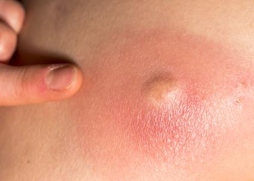

Abscess Surgery (ပြည်တည်နာခွဲစိတ်ကုသမှု)

အဓိပ္ပါယ်ဖွင့်ဆိုချက်
Abscess Surgery (ပြည်တည်နာခွဲစိတ်ကုသမှု) ကဘာလဲ။
ပြည်တည်နာခွဲစိတ်မှု ဟာ ပြည်တည်နေသော အနာကို ဖယ်ရှားတဲ့ ခွဲစိတ်မှုဖြစ်ပါတယ်။ ပြည်တည်နာဆိုတာဟာ တစ်ရှူးနံရံ ပတ်ပတ်လည်မှာရှိပြီး အလယ်မှာ ပြည်တွေ စုပြုံနေတဲ့ အနာတစ်ခုဖြစ်ပါတယ်။
သင့်ကိုယ်ခန္ဓါက ရောဂါပိုးဝင်ခြင်းကို ထိန်းချုပ်ဖို့ ကြိုးစားတဲ့အခါ ပြည်တည်နာ ဖြစ်တတ်ပါတယ်။ သူဟာ နာကျင်တဲ့ အကျိတ်လိုမျိုးဖြစ်ပြီး နေလို့မကောင်းခြင်းကို ဖြစ်စေတတ်ပါတယ်။ ပြည်တည်နာဟာ ကိုယ်ခန္ဓါ အနှံ့အပြားမှာ ဖြစ်နိုင်ပါတယ်။
Abscess Surgery (ပြည်တည်နာခွဲစိတ်ကုသမှု) ကို ဘာကြောင့် လုပ်ကြတာလဲ။
တကယ်လို့ ပြည်တည်နာဟာ ၁ စင်တီမီတာ ထက်ကြီးရင် (သို့) ပိုပိုကြီးလာရင် (သို့) ပိုနာကျင်လာရင် ပြည်တည်နာ ခွဲစိတ်မှုလုပ်ဖို့ လိုအပ်ပါတယ်။
ခွဲစိတ်မှုလုပ်ပြီးရင် ပြည်တည်နာ ရှိမှာ မဟုတ်တော့ပါဘူး။ ခွဲစိတ်မှုဟာ ပြည်တည်နာက ဖြစ်စေတဲ့ ပြင်းထန်တဲ့ ဆိုးကျိုးတွေကို ကာကွယ်ပေးနိုင်ပါတယ်။
လက္ခဏာများ
Abscess Surgery (ပြည်တည်နာခွဲစိတ်ကုသမှု) ကိုမလုပ်ခင် ဘာတွေ သိထားသင့်သလဲ။
တကယ်လို့ ပြည်တည်နာက သေးတယ်ဆိုရင် (၁ စင်တီမီတာအောက်) အိမ်မှာ ကုသနိုင်ပါတယ်။ အနာကို အပူကပ်ပြီး မိနစ်၃၀ လောက်ထားခြင်းကို တစ်နေ့လေးကြိမ်လောက် ပြုလုပ်ပေးခြင်းဟာ အကျိုးရှိပါတယ်။
အနာကို ဖိပြီး ပြည်ထွက်သွားအောင် မပြုလုပ်သင့်ပါဘူး။ ဒါဟာ ရောဂါပိုးတွေကို တစ်ရှူးအတွင်းဘက် ရောက်သွားအောင် တွန်းလိုက်သလို ဖြစ်နိုင်ပါတယ်။
အပ် (သို့) အခြားချွန်ထက်တဲ့အရာကို အသုံးပြုပြီး ပြည်တည်နာ အလယ်ကို ထိုးခြင်းလည်း မပြုလုပ်သင့်ပါဘူး။ ဒါဟာ အောက်မှာရှိတဲ့ သွေးကြောတွေ ကို ထိခိုက်စေနိုင်ပြီး ရောဂါပိုးတွေကိုလည်း ပြန့်စေနိုင်ပါတယ်။
ပြည်တည်နာခွဲစိတ်မှု ပြုလုပ်အပြီးမှာ အောက်ပါ နောက်ဆက်တွဲ ဆိုးကျိုးတွေ ရရှိနိုင်ပါတယ်။ ဥပမာ
• နာကျင်မှု
• သွေးထွက်မှု
• ရုပ်ဆိုးသော အမာရွတ်
• သွေးခဲခြင်း
• ပြည်တည်နာ နောက်တစ်ကြိမ် ပြန်ဖြစ်ခြင်း
ဒီခွဲစိတ်မှုမပြုလုပ်မီ ဖြစ်နိုင်တဲ့ ကောင်းကျိုးဆိုးကျိုးတွေကို နားလည်ထားဖို့အရေးကြီးပါတယ်။
တကယ်လို့ မေးခွန်းတွေရှိရင် သင့်ဆရာဝန် (သို့) ခွဲစိတ်ဆရာဝန်ကို ဆက်သွယ်မေးမြန်းနိုင်ပါတယ်။
အကြောင်းရင်းများ
ပြည်တည်နာခွဲစိတ်မှု တွေ ကို ဘယ်လိုပြင်ဆင်သင့်သလဲ။
ထုံဆေးနဲ့ ပြည်တည်နာကို ဖေါက်ထုတ်လိုက်မှာ ဖြစ်ပါတယ်။ ဒါပေမယ့် များသောအားဖြင့် မေ့ဆေးလိုအပ်နိုင်ပါတယ်။ ခွဲစိတ်မှု မပြုလုပ်ခင် စားသောက်ခြင်းတွေ ဘယ်အချိန်မှာ ရပ်ရမယ်ဆိုတာနဲ့ ပတ်သက်ပြီး ဆရာဝန် ညွှန်ကြားချက်ကို လိုက်နာသင့်ပါတယ်။
ဖြစ်နိုင်ခြေများ
ပြည်တည်နာခွဲစိတ်မှု ပြုလုပ်နေချိန်မှာ ဘယ်လို ဖြစ်မှာလဲ။
ခွဲစိတ်မှုဟာ ၁၀-၂၀ မိနစ် ကြာမြင့်နိုင်ပါတယ်။ သင့်ဆရာဝန်ဟာ ပြည်တည်နာပေါ်က အရေပြားကို ခွဲလိုက်မှာဖြစ်ပါတယ်။ ပြည်တွေကို ဖယ်ထုတ်ပြီးရင်တော့ ကျန်ခဲ့တဲ့ချိုင့်ခွက်ဟာ သူ့ကြမ်းပြင်ကနေ အပေါ်ကို တဖြည်းဖြည်း ကျက်လာဖို့ လိုပါတယ်။
ဒါကြောင့် အရေပြားပေါ်မှာ အပေါက်ကျန်ခဲ့မှာ ဖြစ်ပါတယ်။ တကယ်လို့ ချိုင့်ခွက်ဟာ နက်တယ်ဆိုရင်တော့ ခွဲစိတ်ဆရာဝန်က ပိုးသတ်ဆေး ထည့်ပေးမှာဖြစ်ပါတယ်။
တကယ်လို့ မေးခွန်းတွေရှိရင် သင့်ဆရာဝန် (သို့) ခွဲစိတ်ဆရာဝန်ကို ဆက်သွယ်မေးမြန်းနိုင်ပါတယ်။
ရောဂါအဖြေရှာခြင်းနှင့် ကုသမှု
ယခုဖော်ပြထားသော အချက်အလက်များကို ဆေးပညာအကြံပေးမှုနေရာတွင် အစားထိုးရန်မသင့်တော်ပါ။ ပိုမိုသောအချက်အလက်များရရှိရန်အတွက် ဆရာဝန်နှင့် အမြဲတမ်းတိုင်ပင်ပါ.
ပြည်တည်နာခွဲစိတ်မှု လုပ်ပြီးသွားချိန် ဘာဖြစ်မှာလဲ။
လူအတော်များများဟာ ပြည်ထွက်သွားပြီးရင် နေလို့ကောင်းသွားတတ်ပါတယ်။
တကယ်လို့ နာကျင်မှု ရှိနေတုံးဆိုရင်တော့ ဆရာဝန်က အိမ်မှာသောက်ဖို့ အကိုက်အခဲပျောက်ဆေးတွေကို နောက် တစ်ရက်၊ နှစ်ရက်စာ ပေးနိုင်ပါတယ်။
ဆရာဝန် ညွှန်ကြားချက်အတိုင်း အတိအကျ လိုက်နာသင့်ပါတယ်။
သင့်ဆရာဝန်က အနာကို ဖြည်ဖို့အတွက် ညွှန်ကြားချက်တွေ ပြောပြနိုင်ပါတယ်။
နောက်ဆုံးအနေနဲ့ ဖျားနာမှု၊ နီခြင်း၊ ရောင်ရမ်းခြင်း၊ နာကျင်မှု များလာခြင်းတွေ ရှိခဲ့ရင် ဆရာဝန်ကို ချက်ချင်းအကြောင်းကြားသင့်ပါတယ်။
Source-Dr . Phyu Mon Latt